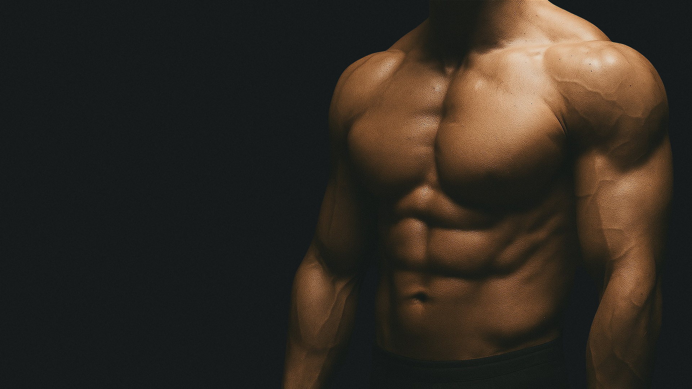
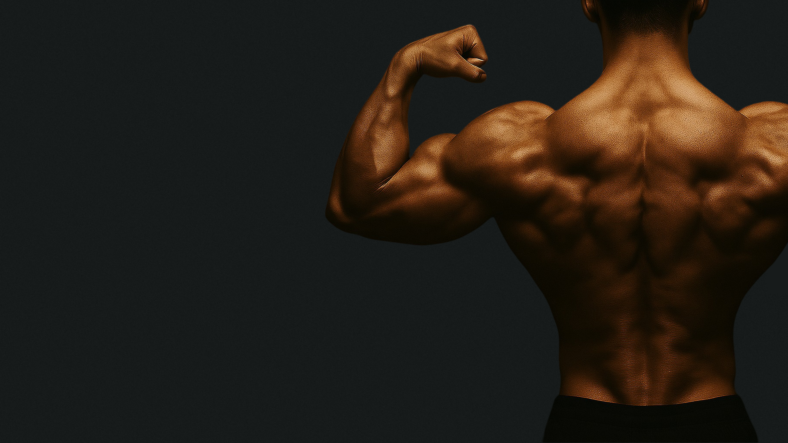
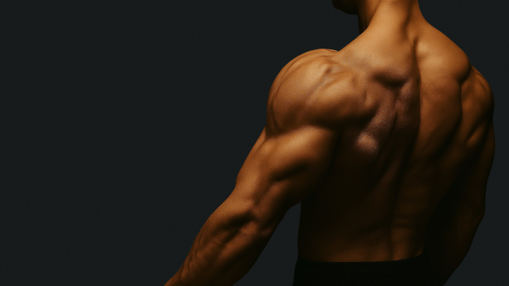
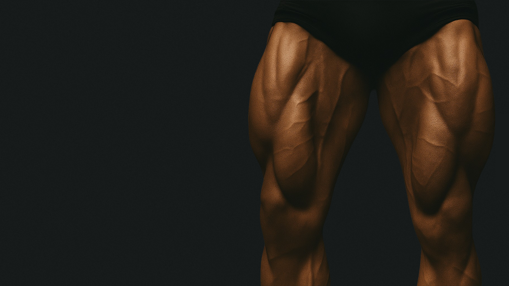

DAY 1
DAY 2
DAY 3
DAY 4
DAY 5
CHEST
BACK
ARMS
SHOULDERS
LEGS
1
2
3
4
5
—
5

3x10
BENCH PRESS
Primary: Chest
Secondary: Front Shoulders, Triceps.
SETUP
Lie on the bench with your feet firmly planted, shoulder blades squeezed together, and a slight arch in your lower back. Take a grip just wider than shoulder-width and keep your wrists straight before unracking the bar.
EXECUTION
Lower the bar under control to your mid-chest with your elbows at a 45–70° angle, lightly touching your chest without bouncing. Press the bar back and up in a slight J-curve while driving your feet into the floor to stay tight and stable.
STRENGTH/SAFETY
Warm up properly, avoid taking every set to failure, and keep your wrists neutral. Use a spotter or safety bars when going heavy, and build supporting strength with back, chest, and triceps accessories.

3x10
INCLINE DUMBBELL PRESS
Primary: Upper Chest
Secondary: Front Shoulders, Triceps.
SETUP
Set the bench to a 30-45° incline. Sit and hold dumbbells at your sides, then lie back with feet firmly on the floor. Keep your shoulder blades retracted and chest lifted.
EXECUTION
Press the dumbbells up over your upper chest, keeping wrists neutral. Lower the dumbbells slowly until they are just above chest level, elbows at about 45°. Press back up while maintaining control.
STRENGTH/SAFETY
Start with moderate weights to maintain form. Avoid flaring elbows excessively to protect shoulder joints. Control the dumbbells to avoid strain.

3x8-12
CHEST DIPS
Primary: Lower Chest
Secondary: Triceps, Front Shoulders.
SETUP
Use parallel bars or dip station. Grip bars firmly and lift your body. Lean slightly forward with shoulders back to target chest more.
EXECUTION
Lower your body by bending elbows until your shoulders are below elbows. Keep elbows flared slightly and chest forward. Push back up until arms are nearly straight without locking elbows.
STRENGTH/SAFETY
Warm up wrists and shoulders. Avoid excessive forward lean to reduce shoulder strain. Use assisted dips if necessary to maintain form.

3x12-15
CABLE FLY
Primary: Chest (especially inner)
Secondary: Front Shoulders.
SETUP
Stand between two cable pulleys set at chest height. Grab handles with palms facing forward, step forward slightly to create tension.
EXECUTION
With a slight bend in elbows, bring hands together in front of your chest. Squeeze your chest at the peak of the movement. Return slowly to starting position with control.
STRENGTH/SAFETY
Keep movements smooth to avoid shoulder strain. Adjust weight to maintain form. Avoid locking elbows at the end of the movement.

3x15-20
PUSH-UP
Primary: Chest
Secondary: Triceps, Front Shoulders, Core.
SETUP
Start in a high plank position with hands placed slightly wider than shoulder-width. Keep your body in a straight line from head to heels.
EXECUTION
Lower your chest to just above the floor by bending elbows at about 45°. Keep your core tight and avoid sagging hips. Push back up to the starting position fully extending your arms.
STRENGTH/SAFETY
Maintain proper form to avoid shoulder or lower back strain. Modify with knees down if full push-ups are too challenging. Control your movement and breathe steadily.

3x8-12
PULL-UP
Primary: Latissimus Dorsi
Secondary: Biceps, Rhomboids, Traps.
SETUP
Grab the pull-up bar with a grip slightly wider than shoulder-width, palms facing away. Hang with arms fully extended and shoulders engaged.
EXECUTION
Pull your body upward by driving your elbows down and back, aiming to get your chin over the bar. Lower yourself slowly back to full extension.
STRENGTH/SAFETY
Warm up shoulders and elbows. Use assisted pull-ups if needed to maintain good form. Avoid swinging or kipping unless trained to do so.

3x8-10
BENT-OVER BARBELL ROW
Primary: Middle Back (Rhomboids, Traps)
Secondary: Lats, Rear Shoulders, Biceps.
SETUP
Stand with feet hip-width apart, bend knees slightly, and hinge at hips to lean forward with a flat back. Grip the barbell just wider than shoulder-width.
EXECUTION
Pull the barbell toward your lower ribs, squeezing your shoulder blades together. Lower the bar under control back to full extension.
STRENGTH/SAFETY
Keep your back flat and core tight throughout. Avoid using momentum to lift. Start with lighter weights to perfect form.

3x10-12
SEATED CABLE ROW
Primary: Middle Back
Secondary: Lats, Biceps, Rear Shoulders.
SETUP
Sit on the cable row machine with feet firmly on the platform. Grab the handle with both hands and keep your chest up and shoulders back.
EXECUTION
Pull the handle toward your torso, squeezing your shoulder blades together. Slowly extend your arms back to the start.
STRENGTH/SAFETY
Avoid leaning too far back. Control the weight throughout the movement. Use a weight that allows for full range of motion without jerking.

3x10-12
LAT PULLDOWN
Primary: Latissimus Dorsi
Secondary: Biceps, Rear Shoulders.
SETUP
Sit at the lat pulldown machine and grip the bar wider than shoulder-width, palms facing forward. Keep chest up and core engaged.
EXECUTION
Pull the bar down toward your upper chest by driving elbows down and back. Pause and squeeze the lats, then slowly return to start.
STRENGTH/SAFETY
Avoid leaning too far backward. Control the bar on the way up. Use manageable weight to maintain form.

3x15-20
SUPERMAN
Primary: Lower Back (Erector Spinae)
Secondary: Glutes, Shoulders.
SETUP
Lie face down on the floor with arms extended overhead and legs straight.
EXECUTION
Simultaneously lift your arms, chest, and legs off the floor, squeezing your lower back and glutes. Hold briefly, then lower back down with control.
STRENGTH/SAFETY
Avoid neck strain by keeping your head neutral. Move slowly and with control. Focus on contracting the lower back muscles.

3x10-12
BARBELL BICEP CURL
Primary: Biceps Brachii
Secondary: Brachialis, Forearms.
SETUP
Stand upright with feet shoulder-width apart, holding a barbell with an underhand grip. Keep elbows close to your sides.
EXECUTION
Curl the barbell up towards your shoulders by contracting your biceps. Lower the weight slowly back to the starting position.
STRENGTH/SAFETY
Avoid swinging your body; keep movement controlled. Don’t let elbows drift forward. Start with manageable weight to maintain form.

3x8-12
TRICEP DIP
Primary: Triceps Brachii
Secondary: Chest, Front Shoulders.
SETUP
Use parallel bars or a bench. Grip bars firmly or place hands behind on bench with fingers forward. Keep shoulders down and back.
EXECUTION
Lower your body by bending elbows until upper arms are parallel to the floor. Press back up by extending your arms fully.
STRENGTH/SAFETY
Avoid locking elbows at the top. Maintain control throughout. Use assisted dips if necessary to avoid strain.

3x10-12
HAMMER CURL
Primary: Biceps Brachii, Brachialis
Secondary: Forearms.
SETUP
Stand upright holding dumbbells with a neutral grip (palms facing each other). Keep elbows close to sides.
EXECUTION
Curl dumbbells upward while maintaining the neutral grip. Lower dumbbells slowly back to start.
STRENGTH/SAFETY
Avoid swinging your torso. Control the movement. Use appropriate weight to prevent injury.

3x10-12
OVERHEAD TRICEP EXTENSION
Primary: Triceps Brachii
Secondary: Shoulders, Core.
SETUP
Hold a dumbbell with both hands overhead, elbows pointing forward. Stand or sit with a straight back.
EXECUTION
Lower the dumbbell behind your head by bending elbows. Extend arms back overhead to start position.
STRENGTH/SAFETY
Keep elbows close to your head. Avoid arching your lower back. Move slowly and control the weight.

3x10-12
CONCENTRATION CURL
Primary: Biceps Brachii
Secondary: Brachialis, Forearms.
SETUP
Sit on a bench, lean slightly forward, and hold a dumbbell in one hand. Rest your elbow on the inside of your thigh.
EXECUTION
Curl the dumbbell toward your shoulder, squeezing the bicep at the top. Lower slowly back down.
STRENGTH/SAFETY
Maintain control throughout. Avoid swinging the arm. Use moderate weight for proper form.

3x8-10
OVERHEAD PRESS
Primary: Deltoids (All Heads)
Secondary: Triceps, Upper Chest.
SETUP
Stand with feet shoulder-width apart, hold barbell or dumbbells at shoulder height. Keep core tight and elbows slightly in front of the bar.
EXECUTION
Press the weight overhead until arms are fully extended. Lower back down with control to the starting position.
STRENGTH/SAFETY
Avoid arching the lower back. Keep wrists straight and aligned. Use a spotter or lighter weights if needed.

3x12-15
LATERAL RAISE
Primary: Lateral Deltoid
Secondary: Traps, Supraspinatus.
SETUP
Stand with dumbbells at your sides, palms facing inward. Keep a slight bend in your elbows.
EXECUTION
Raise the dumbbells out to the sides until arms are parallel to the floor. Lower back down slowly.
STRENGTH/SAFETY
Avoid swinging or using momentum. Use lighter weights to focus on form. Keep shoulders down and back.

3x12-15
REAR DELT FLY
Primary: Rear Deltoid
Secondary: Rhomboids, Traps.
SETUP
Bend at hips with a flat back, holding dumbbells with palms facing each other. Keep a slight bend in the elbows.
EXECUTION
Raise the dumbbells out to the sides until arms are parallel to the floor. Lower with control.
STRENGTH/SAFETY
Avoid using momentum or jerking. Focus on squeezing rear delts. Use manageable weight.

3x12-15
FRONT RAISE
Primary: Anterior Deltoid
Secondary: Upper Chest, Traps.
SETUP
Stand holding dumbbells in front of thighs with palms facing your body. Keep arms straight with a slight bend in elbows.
EXECUTION
Raise dumbbells straight up to shoulder height. Lower down slowly and controlled.
STRENGTH/SAFETY
Avoid swinging or using momentum. Control the movement throughout. Use lighter weights for form focus.

3x12-15
SHRUG
Primary: Upper Trapezius
Secondary: Neck Stabilizers.
SETUP
Stand holding dumbbells or barbell at your sides with arms fully extended.
EXECUTION
Elevate your shoulders as high as possible towards your ears. Hold briefly, then lower back down.
STRENGTH/SAFETY
Avoid rolling shoulders. Keep neck relaxed. Use moderate weight to prevent strain.

3x8-10
BACK SQUAT
Primary: Quadriceps, Glutes
Secondary: Hamstrings, Core, Lower Back.
SETUP
Position the barbell across your upper traps. Stand with feet shoulder-width apart, toes slightly out. Keep chest up and core tight.
EXECUTION
Descend by pushing hips back and bending knees, keeping knees tracking over toes. Lower until thighs are at least parallel to the floor. Drive through your heels to stand back up.
STRENGTH/SAFETY
Maintain a neutral spine throughout. Avoid knees caving inward. Use a spotter or safety bars when lifting heavy.

3x6-8
DEADLIFT
Primary: Hamstrings, Glutes, Lower Back
Secondary: Core, Traps, Forearms.
SETUP
Stand with feet hip-width apart, bar over mid-foot. Grip the bar just outside your knees. Keep chest up and back flat.
EXECUTION
Drive through your heels, extend hips and knees to lift the bar. Keep the bar close to your body throughout. Lower the bar back down with control.
STRENGTH/SAFETY
Avoid rounding your back. Engage your core. Use appropriate weight and focus on form.

3x10 (each leg)
LUNGES
Primary: Quadriceps, Glutes
Secondary: Hamstrings, Core.
SETUP
Stand upright with feet hip-width apart. Step forward with one leg, keeping torso upright.
EXECUTION
Lower your body by bending both knees until the back knee nearly touches the floor. Front knee should stay over the ankle. Push through the front heel to return to start.
STRENGTH/SAFETY
Keep your balance by engaging your core. Avoid letting the front knee go past your toes. Use assistance or lighter weights if needed.

3x10-12
LEG PRESS
Primary: Quadriceps, Glutes
Secondary: Hamstrings, Calves.
SETUP
Sit on the leg press machine with feet shoulder-width apart on the platform. Keep your back and hips firmly against the pad.
EXECUTION
Push the platform away by extending your legs without locking knees. Slowly bend knees to return platform close to your body.
STRENGTH/SAFETY
Avoid locking out knees at the top. Keep feet flat on the platform. Use a weight that allows smooth controlled motion.

3x12-15
HAMSTRING CURL
Primary: Hamstrings
Secondary: Calves, Glutes.
SETUP
Lie face down on the hamstring curl machine with the pad against your lower calves. Adjust the machine for a comfortable range of motion.
EXECUTION
Curl your legs upward by contracting your hamstrings. Lower slowly back to start.
STRENGTH/SAFETY
Avoid lifting hips off the bench. Control the weight throughout. Start with manageable resistance.